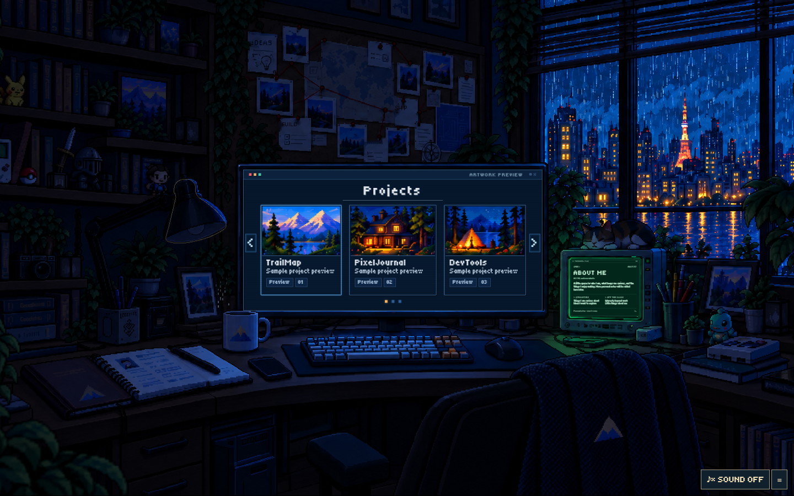
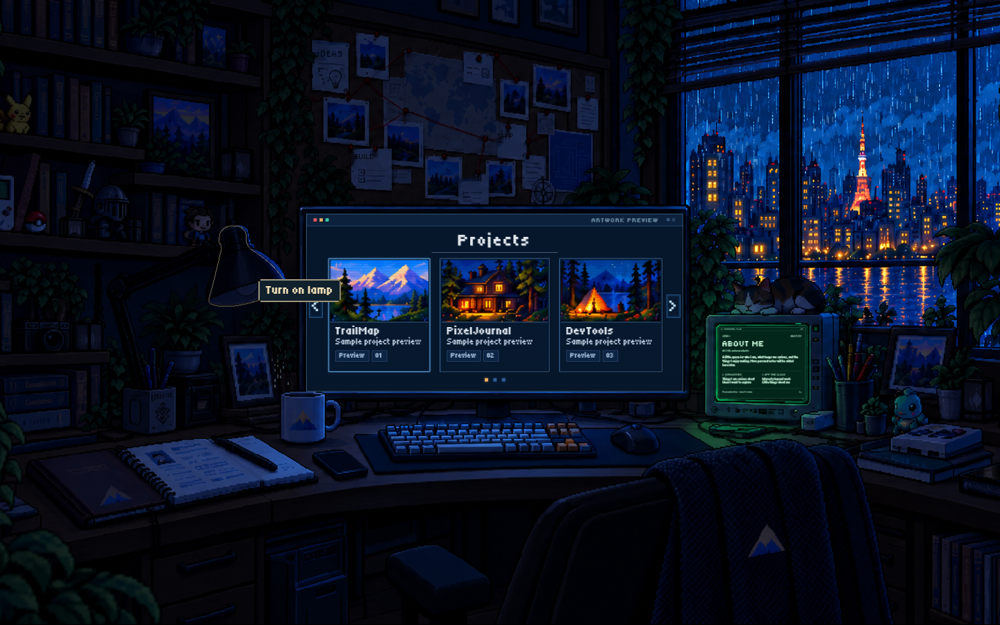
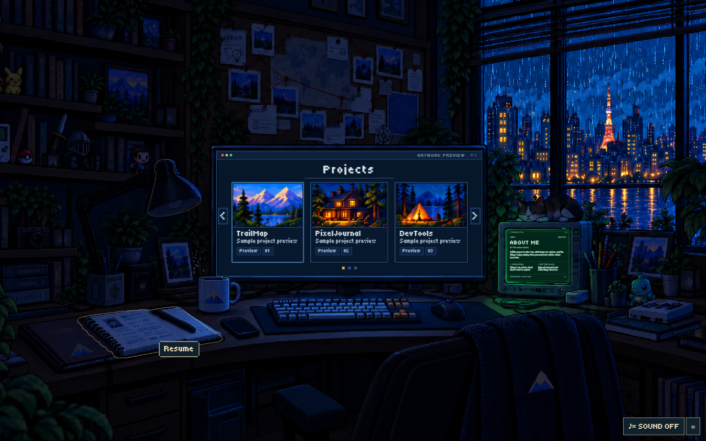
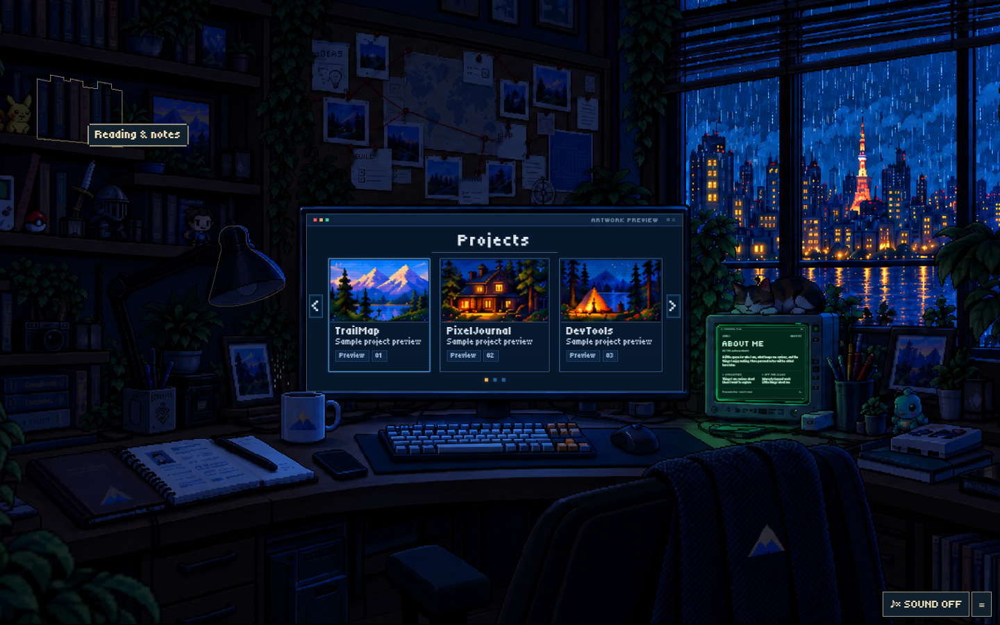
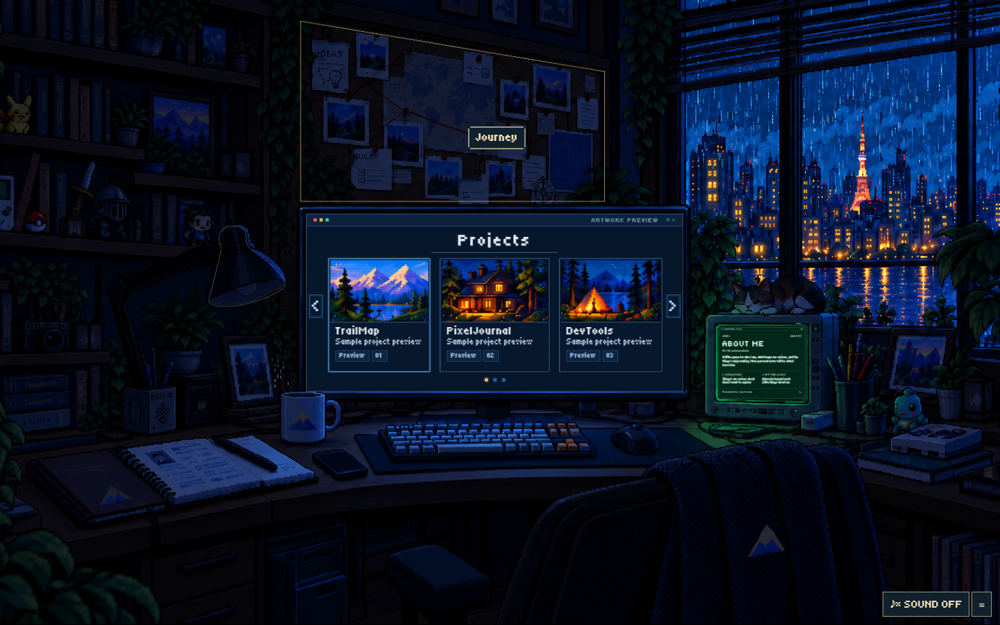
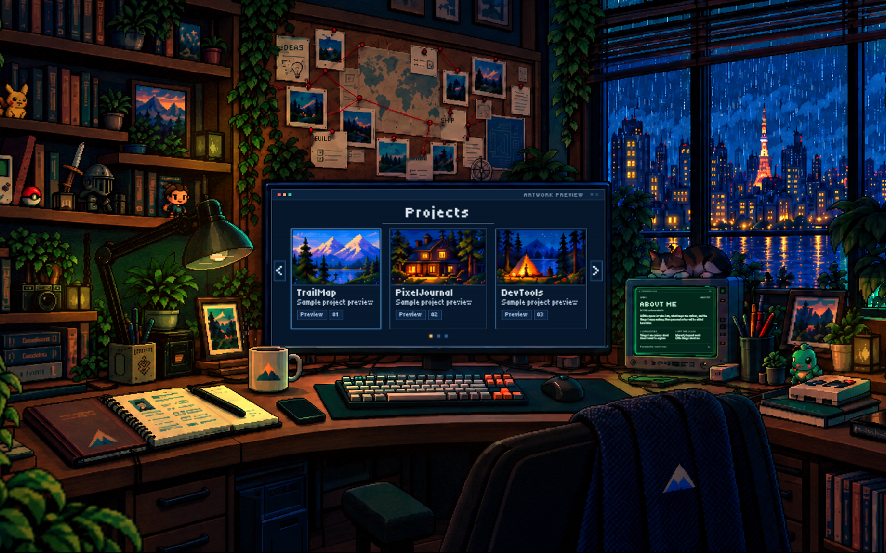
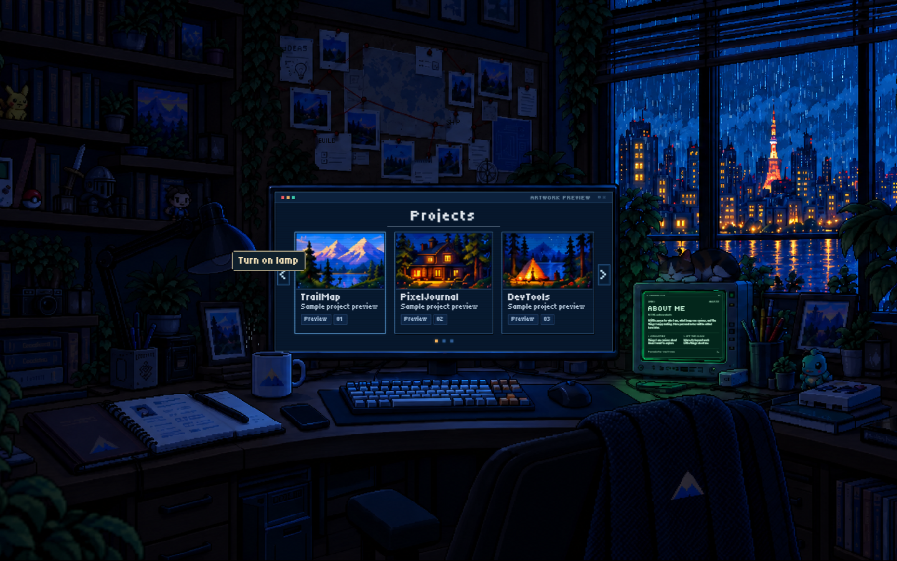

The room starts dark. The lamp shade has one faint discovery contour per page load. After its first activation, only the small action caption remains on hover; the contour does not return when the light is manually switched off. Keyboard focus keeps a separate small marker for accessibility.






